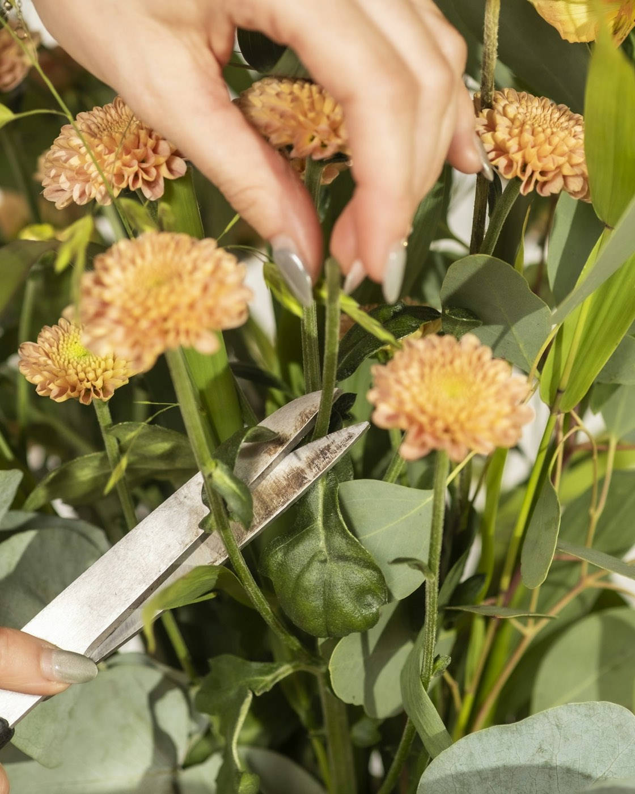

Why we recut every stem at an angle

Every bunch that leaves the studio has been conditioned first. We unwrap the stems, strip the leaves that would sit below the waterline, and recut each one at 45 degrees. The slanted cut gives the stem more surface to drink through and keeps it from sitting flat on the bottom of the bucket.
The cut is made under water, or the stem goes straight into water afterwards, so no air is drawn up the stem. Then the stems rest somewhere cool and dim for an hour or two before we arrange them. It is not glamorous work, but it is most of the difference between a bouquet that droops on day three and one that opens properly.
At home, do the same when yours arrives: unwrap it, recut an inch off, strip anything below the water, and use the flower food packet. Then recut and change the water every two or three days, and keep the vase away from the fruit bowl and the heating vent.